MAP+ Aide
Contenu
Cartes et fonctions
Outils
Navigation
Vous disposez des options suivantes pour naviguer sur la carte:
- Faire pivoter la carte: Shift/Alt, cliquez et glisser. Retourner vers le nord: utilisez la fonction "flèche" (elle n'est visible que si vous avez fait pivoter la carte)
- Zoom in et zoom out Utilisation de la molette de la souris ou les touches +/-
- Déplacer la carte: Maintenez le bouton gauche de la souris enfoncé et faites glisse ou uttilisez les touches fléchées
- Fenètre: Appuyer sur la touche Shift et cliquer/glisser sur la carte
- Localisation (GPS)
- Afficher aperçu général, fonction "Maison"
- Afficher la carte en plein écran
Recherche
Vous pouvez rechercher pour::
- Adresses
- Parcelles
- Commune
- Code postal / localité
- Points d'intérêt comme hôtels, restaurants, cabannes etc.
- Noms locaux, lacs, montagnes etc. (swissnames by swisstopo, plus de 400'000 objets)
Exemples de techniques de recherche rapides et efficaces
Entrez le terme (ou une partie) que vous recherchez ou une combinaison de termes:
- Adresse, Optingenstrasse 27, Bern: "opt 27"
- Adresse, Bahnhofstrasse 13 , Stettlen: "bahn 13 st"
- Parcelle, 977 Bern Kirchenfeld: "977 ber"
- Parcelle, 222 Münsingen: "222 mün"
- Hôtel Sternen Muri: "ster mur"
- Cabanne de Blüemlisalp: "blü berg"
Affichage et recherche de coordonnées

Cadenas ouvert: affichage dynamique des coordonnées de la position de la souris.

Cadenas fermé: affichage des coordonnées de la position de la souris en cliquant, permettant copier/coller des coordonnées.
Pour rechercher, entrez les coordonnées désirées séparés par une virgule ou espace, puis appuyez sur Entrée.
Cartes
Cartes de fond
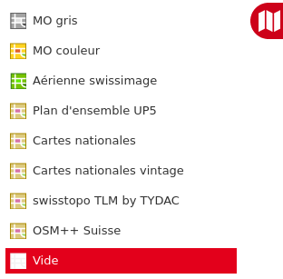
Comme fond vous avez la choix:
- MO gris: mensuration officielle gris
- MO couleur: mensuration officielle couleur
- Images aeriennes swissimage
- Plan d'ensemble: plan topographique conçu pour l’échelle du 1:5000 (petites echelles: cartes nationales)(
- Cartes nationales swisstopo
- Cartes nationales vintage swisstopo
- swisstopo TLM by TYDAC (TLM: modèle topographique du paysage)
- OSM++ Suisse: Cartographie sur base de OpenStreetMap
Autre fonctions
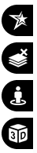
Autre fonctions sont:
- Cartes thématiques
- Enlever toutes les couches
- Google StreetView:
- Navigation dans Street View: la carte est ajustée en conséquence (position et la direction).
- Alternativement, vous pouvez déplacer l'objet Street View sur la carte. Le système cherche la prise la plus proche.
- Vue 3D de la zone
Cartes
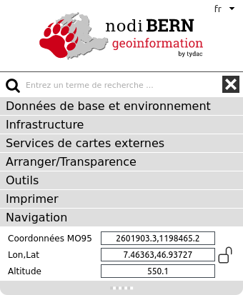
Choix des couches qui peuvent être ajoutées à la carte de fond, thèmes disponibles:
Menu Données de base et environnement:
- Mensuration, terrain
- Planification, images aériennes
- Environnement
- Climat
Menu Infrastructure:
- Transport et énergie
- Institutions, services
- Culture, Tourisme, Loisirs
Demande d'information sur l'objet
toutes les couches avec un "i" dans l'icône peuvent être interrogées. Pour interroger un ou plusieurs thèmes, cliquez sur l'objet désiré.
Example:
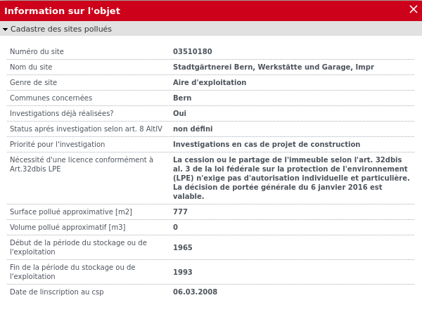
Légendes
Des légendes et descriptions sont disponibles pour la plupart des thèmes de la carte. Cliquez sur le nom de la carte:
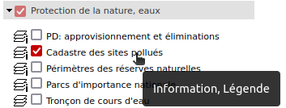
Chargez des services WMS (Services de cartes externes)
Définition de Wikipedia: Web Map Service ou WMS est un protocole de communication standard qui permet d'obtenir des cartes de données géoréférencées à partir de différents serveurs de données. Cela permet de mettre en place un réseau de serveurs cartographiques à partir desquels des clients peuvent construire des cartes interactives. Le WMS est décrit dans des spécifications maintenues par l'Open Geospatial Consortium.
- Choisir la rubrique SERVICE DE CARTES EXTERNE (en bas a gauche)
- Klicken Sie auf Externe Kartendienste (WMS). Folgender Dialog erscheint:
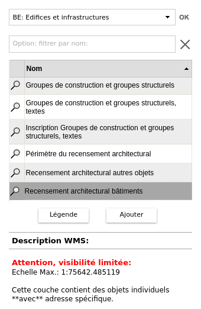
- WMS: WMS Choisissez dans la liste ou tapez un filtre ou un WMS pour votre choix.
- La liste des couches WMS apparaît.
Le choix d'une couche a les options suivantes: :
- S'il y a, sur la droite s'affiche une description de la couche
- En cliquant sur la couche la couches est affiché dans la carte. Remarque: Beaucoup de WMS ont des limites d'échelle -> dans ce cas, une note dans la description
sera affiché: "Attention, visibilité limitée en fonction de l'échelle
..."
- Légende: s'il y a une légende, le bouton est cliquable et la
légende peut être affiché
- Ajouter le service WMS à la carte.
- Certains services ne sont pas transparents. Pour modifier la transparence, sélectionnez la rubrique ARRANGER / TRANSPARENCE (en bas a gauche)
- Interrogation attributs: Sur un WMS on peut également interroger
des attributs (si disponibles).
- Pour enlever les couches WMS, cliquez sur la fonction "Enlever tous" ou utilisez la rubrique ARRANGER / TRANSPARENCE (en bas a gauche)
Arranger / Transparence
Les cartes sélectionnées peuvent être triées à l'aide de cette fonctionnalité (déplacer utilisant les les flèches). De plus, la transparence de chaque carte peut être modifiée.
Esempio:
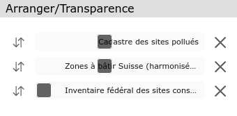
Outils
Les outils suivants sont disponibles (voir ci-dessous pour plus de détails):
- Mesurer et profils
- Dessiner
Imprimer
 Impression PDF à l'échelle
Impression PDF à l'échelle
La boîte de dialogue suivante s'affiche. Choisissez échelle, mise en page, résolution:
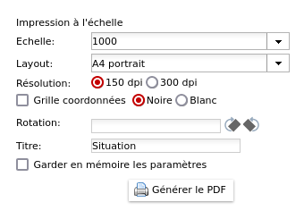
IMPORTANT: Pour imprimer un PDF à l'échelle avec Adobe Acrobat Reader les options de "copies et ajustements" doivent être définies comme suit (similaire avec autres outils d'impression PDF). Example:
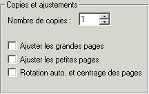
 Export PDF/PNG
Export PDF/PNG
La section de carte peut être exportée au format PDF (sans bord ni mise en page, sans échelle) ou au format PNG. Dans le cas du format PDF, vous pouvez sélectionner la taille et la résolution de la carte. Dans le cas du format PNG, la taille en pixels.
Mesurer
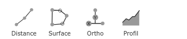
 Distance
Distance
Mesurer une distance: Cliquez des points dans la carte; pour terminer la mesure de la distance, cliquez deux fois.
 Mesure orthogonale
Mesure orthogonale
Mesure orthogonale exacte, procéder comme suit:
- Changer les propriétés si vous le souhaitez (style de trait, police et leur taille)
- Numériser d'abord les abscisses (base), par exemple une limite de parcelle (deux bornes)
- Ensuite, un nombre arbitraire de points de tri: par exemple, bords de maison, etc.
- Pour conclure: double-cliquez sur le dernier point
- Pour quitter la fonction, sélectionnez à nouveau la fonction ou fermez la boîte de dialogue
Vidéo instructions ...
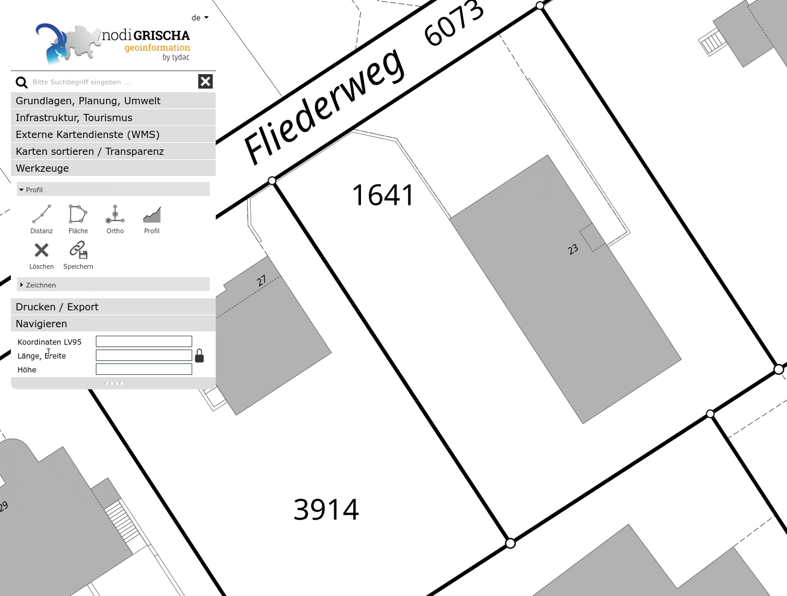
 Superfice
Superfice
Mesurer une surface: Cliquez des points dans la carte; pour terminer la mesure de la surface, cliquez deux fois.
 Déplacer / Modifier
Déplacer / Modifier
Les objets capturés (lignes, surfaces) peuvent être modifiés et / ou déplacés ultérieurement. Pour ce faire, procédez comme suit:
- Vérifier qu'aucune fonction de mesure est active
- Cliquez sur l'objet souhaité
- Pour déplacer l'objet, cliquez sur l'image bleue du déplacement et faites glisser l'objet. Si les lignes sont droites, cliquez sur l'une des flèches qui ne sont pas au milieu de la ligne.
- Pour ajouter des points à l'objet, cliquez sur les lignes à l'endroit souhaité et faites glisser
- Pour effacer des points de l'objet, cliquez sur un point limite et utilisez Alt/Click
- Pour effacer l'objet, cliquez sur l'objet et utilisez Delete
Vidéo instructions ...

Profil

Mesure de la distance avec génération du profil
Cliquez sur le point de départ souhaité puis enregistrez n'importe quel nombre de points intermédiaires. Double-cliquez pour terminer. Une fois la mesure terminée, vous pouvez déplacer des points ou en ajouter de nouveaux points intermédiaires. Pour mesurer une nouvelle profile, répétez simplement la procédure. Pour sortir de la fonction, sélectionnez à nouveau la fonction. On peux:
- Déplacez le souris sur le profil. L'emplacement est affiché sur la carte
- Cliquez sur le profil pour l'agrandir, par exemple pour imprimer
Vous pouvez ajouter et déplacer des points de la polyligne de distance, le profil est mis à jour (voir ci-dessus). Pour terminer la fonction, cliquez à nouveau sur l'icône, choisissez une autre fonction ou passez à cartes ou recherchez.

 Effacer: cliquez sur la fonction de suppression.
Effacer: cliquez sur la fonction de suppression.
 Enregistrer comme signet: la mesure peut être enregistrée comme signet. Si vous enregistrez une mesure, une balise est ajoutée à l'URL. Vous pouvez enregistrer l'URL comme signet ou copier l'URL et, par exemple, l'envoyer à quelqu'un. En plus de la mesure, tous les paramètres de la carte sont sauvegardés (vous pouvez revenir exactement où vous étiez).
Enregistrer comme signet: la mesure peut être enregistrée comme signet. Si vous enregistrez une mesure, une balise est ajoutée à l'URL. Vous pouvez enregistrer l'URL comme signet ou copier l'URL et, par exemple, l'envoyer à quelqu'un. En plus de la mesure, tous les paramètres de la carte sont sauvegardés (vous pouvez revenir exactement où vous étiez).
Dessin
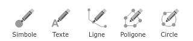
 Symboles
Symboles
Sélectionner la fonction. Un choix de symboles est affiché, choisissez le symbole souhaité. Cliquez sur la carte pour le placer. Répétez l'opération pour ajouter d'autres points. Pour finir, cliquez de nouveau sur la fonction. Les symboles peuvent être déplacés ou modifiés: cliquez sur le symbole et le déplacer en le faisant glisser avec la souris. Modifiez-le en choisissant un autre dans la liste.
 Textes
Textes
Sélectionner la fonction. Un choix de propriétés de texte apparaît, cliquez dessus et tapez le texte souhaité. Cliquez sur "OK" et après sur la carte pour la placer. Répétez l'opération pour ajouter d'autres textes. Pour finir, cliquez de nouveau sur la fonction. Le texte peut être déplacé ou modifié: cliquez sur le texte et le déplacer en le faisant glisser avec la souris. Changer le texte en utilisant le dialogue.
 Lignes
Lignes
Sélectionner la fonction. Le choix des propriétés de la ligne est affichée. Cliquez des points dans la carte, terminez par double-clique. Répétez l'opération pour ajouter d'autres lignes. Pour finir, cliquez de nouveau sur la fonction. Les lignes peuvent être déplacées ou modifiées: cliquez sur la ligne et le déplacer en le faisant glisser avec la souris ou en changeant ou en ajoutantdes points intermédiaires. Changer les propriétés en utilisant le dialogue.

 Surfaces / Circles
Surfaces / Circles
Sélectionner la fonction. Le choix des propriétés de la ligne est affichée. Cliquez des points dans la carte, terminer par double-clique. Répétez l'opération pour ajouter d'autres surfaces. Pour finir, cliquez de nouveau sur la fonction. Les surfaces peuvent être déplacées ou modifiées: cliquez sur la surface et la déplacer en le faisant glisser avec la souris ou en changeant ou en ajoutant des points intermédiaires. Changer les propriétés en utilisant le dialogue..
Déplacer / Modifier
Les objets capturés (lignes, surfaces) peuvent être modifiés et / ou déplacés ultérieurement. Pour ce faire, procédez comme suit:
- Vérifier qu'aucune fonction de mesure est active
- Cliquez sur l'objet souhaité
- Pour déplacer l'objet, cliquez sur l'image bleue du déplacement et faites glisser l'objet. Si les lignes sont droites, cliquez sur l'une des flèches qui ne sont pas au milieu de la ligne.
- Pour ajouter des points à l'objet, cliquez sur les lignes à l'endroit souhaité et faites glisser
- Pour effacer des points de l'objet, cliquez sur un point limite et utilisez Alt/Click
- Pour effacer l'objet, cliquez sur l'objet et utilisez Delete
Effacer: cliquez sur la fonction de suppression.
Enregistrer comme signet: la mesure peut être enregistrée comme signet. Si vous enregistrez une mesure, une balise est ajoutée à l'URL. Vous pouvez enregistrer l'URL comme signet ou copier l'URL et, par exemple, l'envoyer à quelqu'un. En plus de la mesure, tous les paramètres de la carte sont sauvegardés (vous pouvez revenir exactement où vous étiez).
Version mobile
L'application est disponible dans une version mobile adaptée pour les téléphones mobiles avec des fonctionnalités réduites. Disponible sont les fonctions suivantes:
- Choix de la carte de fonds
- hoix des couches qui peuvent être ajoutés
- Localisation GPS
- Enlever toutes les couches
- Afficher aperçu général de la carte
- Interrogation objets
- Recherche